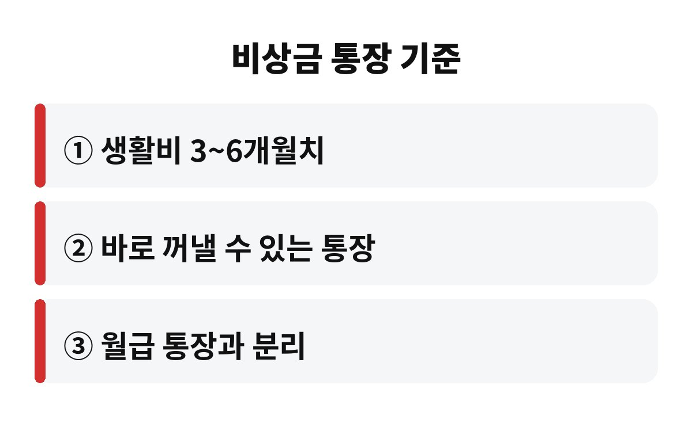

비상금 통장은 보통 생활비 3개월에서 6개월치를 모아 두는 것이 기본 기준입니다. 월급이 갑자기 끊겨도 버틸 수 있을지, 직장인이라면 지금 내 통장부터 확인해 보고 싶지 않으세요?
비상금 통장은 투자 수익을 내려고 만드는 게 아니에요. 갑자기 병원비가 나가거나, 회사가 흔들리거나, 차가 고장 났을 때 대출부터 받지 않게 해 주는 안전벨트 같은 돈입니다. 평소엔 답답해 보여도 한 번 쓰이는 순간 진가가 나오거든요.
가장 많이 쓰는 기준은 한 달 생활비의 3배에서 6배입니다. 월세, 관리비, 통신비, 식비, 대출 이자처럼 안 내면 곤란한 고정 지출을 먼저 더해 보세요. 여기에 보험료와 교통비를 얹으면 내 비상금 통장 목표 금액이 나옵니다.
혼자 사는 직장인이라면 3개월치도 시작으로는 훌륭해요. 반대로 외벌이 가장이거나 프리랜서처럼 소득이 들쭉날쭉하다면 6개월 이상을 목표로 잡는 편이 안전합니다. 정답은 하나가 아니라 내 상황에 맞춰 정하는 거예요.

핵심은 수익률보다 언제든 바로 꺼낼 수 있느냐입니다. 주식이나 만기가 긴 적금에 묶어 두면 정작 급할 때 손해를 보고 해지해야 할 수 있어요. 그래서 보통 파킹통장, CMA, 입출금이 자유로운 통장 같은 곳에 둡니다.
상품마다 금리와 한도, 예금자 보호 여부가 다르니 가입 전에 꼭 조건을 확인하세요. 특히 우대금리 조건이 까다로운 상품은 광고만 보고 가입했다가 기대한 이자를 못 받는 경우가 많습니다. 비상금 통장은 금리 0.1%를 더 받는 것보다 안전하고 빠르게 꺼낼 수 있는 게 먼저예요.
네, 나누는 걸 강력하게 추천해요. 한 통장에 다 섞여 있으면 어디까지가 비상금인지 눈에 안 보이고, 월말에 카드값이 빠지면 슬며시 사라지기 쉽습니다. 이름을 따로 붙인 통장 하나만 있어도 쓰기 전에 한 번 더 망설이게 됩니다.
월급날 자동이체로 일정 금액이 빠져나가게 설정해 두면 의지력이 필요 없어요. 처음엔 월급의 5%든 10만 원이든 부담 없는 금액으로 시작하고, 상여금이나 환급금이 들어올 때 한 번씩 보태 주세요.
가장 흔한 실수는 비상금을 쓰고 나서 다시 채우지 않는 거예요. 여행이나 쇼핑 같은 계획된 소비를 비상금에서 꺼내 쓰면 정작 위기에는 비어 있게 됩니다. 쓴 날 바로 채울 계획까지 같이 세워 두세요.
또 하나는 비상금이 없는 상태에서 투자부터 시작하는 것입니다. 시장이 흔들릴 때 생활비가 급해지면 손실을 보면서 팔게 되거든요. 순서는 비상금이 먼저, 투자가 그다음이라는 점만 기억해도 큰 실수는 줄어듭니다.
실제로 비상금이 필요한 순간은 생각보다 자주 찾아와요. 갑자기 가전제품이 고장 나거나, 경조사비가 한꺼번에 몰리거나, 이직 사이에 한두 달 소득이 비는 일은 누구에게나 생길 수 있습니다. 이럴 때 비상금이 있으면 카드 할부나 신용대출 없이 조용히 넘어갈 수 있어요.
저는 비상금 목표를 세울 때 숫자를 눈에 보이게 적어 두라고 권해요. 예를 들어 한 달 고정지출이 200만 원이라면 3개월치는 600만 원, 6개월치는 1,200만 원이죠. 큰 금액처럼 느껴져도 매달 조금씩 쌓다 보면 어느새 가까워져 있습니다. 목표가 숫자로 보이면 중간에 포기할 확률도 훨씬 줄어듭니다.
마지막으로 비상금은 가끔 점검해 주세요. 물가가 오르거나 월세가 바뀌면 필요한 금액도 달라지거든요. 반년에 한 번쯤 고정지출을 다시 더해 보고 목표를 조정하면 비상금 통장이 늘 제 역할을 하게 됩니다.
지금 내 통장에 생활비 몇 개월치가 들어 있는지 한번 계산해 보세요. 3개월을 못 채웠다면 이번 달부터 자동이체 하나만 걸어 두셔도 충분히 좋은 시작이에요. 여러분은 비상금을 몇 개월치 준비해 두셨나요?
도움이 되셨다면 구독해 주세요. 다음에도 생활에 도움 되는 돈 이야기로 찾아올게요.
※ 본 글은 일반적인 정보 제공이며 투자 권유가 아닙니다. 금융상품 가입 전 조건을 직접 확인하세요.